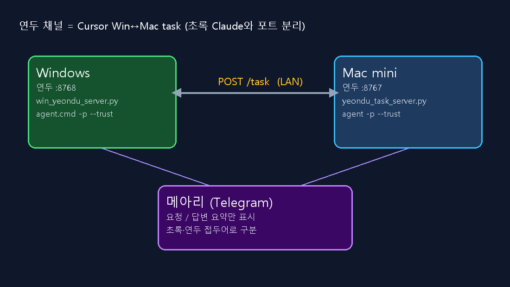

초록은 Claude, 연두는 Cursor — 윈·맥 에이전트 대화 채널을 하나 더 판 이유
클로드 코드 사용량 한도에 막히면 세션을 커서로 옮기고 싶지만, 윈·맥 클로드가 이미 서로 일 시키는 대화창이 있으면 그건 불가능하다. 그래서 엔진은 Cursor로, 중계 구조는 초록과 같게 채널을 하나 더 팠다. 이름은 연두.
1. 초록 채널이 이미 하던 일
윈도우와 맥미니는 같은 LAN에서 HTTP로 대화를 주고받는다. 텔레그램 메아리는 사람이 보는 창이고, 실제 작업은 POST /task다.
| 채널 | 엔진 | 포트 (윈/맥) |
|---|---|---|
| 초록 | Claude Code (claude -p) |
8766 / 8765 |
| 연두 | Cursor (agent / agent.cmd) |
8768 / 8767 |
초록 서버는 git pull까지 맡고, 연두는 task 전용으로 포트만 분리했다. 같은 봇·같은 방에 알림이 섞이지 않게 접두어를 초록 / 연두로 나눴다.
2. 연두 아키텍처

윈
:8768 ↔ 맥 :8767 이 LAN으로 task를 주고받고, 메아리에는 요청·답변 요약만 남긴다.
핵심 규칙은 초록과 같다.
- 회신 본문이
[윈 연두]/[맥 연두]로 시작하면 다시 agent를 돌리지 않는다 (무한 핑퐁 방지). [→상대]:로 한 번 더 물을 수 있고,[1회]태그가 붙으면 되묻지 않는다.VAULT_AUTO_SESSION=1로 task 세션마다 vault backup 커밋이 도배되지 않게 막는다.
3. 구현하면서 걸린 지점
윈도우 Task Scheduler 등록이 일반 권한에선 Access Denied가 났다. UAC로 올린 뒤 VaultWinYeonduServer를 등록하니 로그인 시 자동 기동이 됐다.
openclaw-vault 정션에는 새 파일이 아직 없어서, 설치 스크립트는 한글 경로 볼트를 먼저 찾도록 바꿨다.
맥미니는 Cursor CLI가 PATH에 있어야 한다. 서버는 CLI 없어도 뜨지만, task를 받으면 “agent 없음” 오류만 메아리로 돌아온다. 오늘은 맥 설치까지 끝나 health·task 수신이 확인됐다.
4. 연결 확인
실제로 돌려본 결과는 단순했다.
GET http://192.168.1.33:8768/health → yeondu-win-ok
GET http://192.168.1.40:8767/health → yeondu-mac-ok
POST …/task → 200 ok (백그라운드에서 agent 실행)
메아리에 연두 요청 / 연두 답변이 뜨면 중계뿐 아니라 Cursor 엔진까지 산 것이다.
마무리
다음에 손볼 곳은 재부팅 후에도 양쪽 launchd·Task가 안정인지, 그리고 긴 작업에서 Cursor timeout(600초)이 충분한지 정도다. 클로드 한도에 막혀도 이제 같은 메아리 창에서 연두로 일을 이어 갈 수 있다.